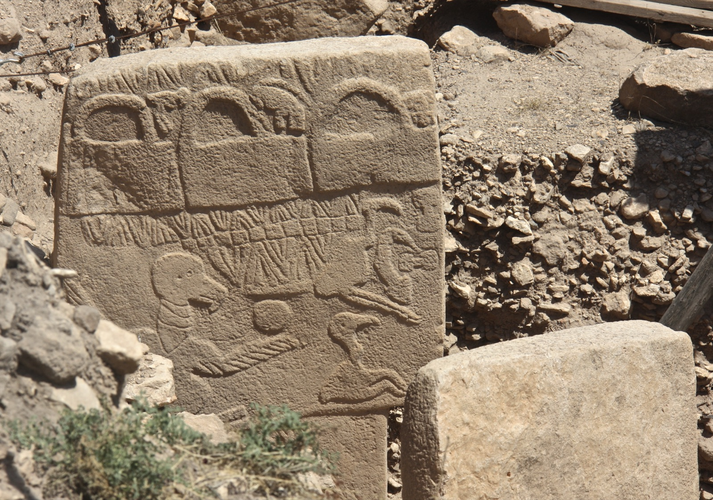

Pillar-43
A local archive for small literary presses. Answers cite their sources, writers set what the AI may read, and every answer says what it could not see.


Why Pillar 43
An archive is more than the documents it holds. It is also how a community decides what to keep, who may read it, and how the pieces relate to each other.
Pillar 43, the Vulture Stone at Göbekli Tepe in southeastern Türkiye, was set up around 9500 BCE, long before writing or cities, while farming was only beginning. Its limestone face carries a large vulture, a snake, a scorpion and a headless human: a symbolic world whose meanings remain unknown, part of the archive of the human imagination.
Some authors read the pillar's carvings as star lore, a record of a comet strike; the excavators dispute it, and Pillar-43 holds the same line in a press's archive, between what the documents say and what a reader brings to them.
What it is
Pillar-43 indexes a press's manuscripts, letters, contracts and minutes on the press's own machine, and answers staff questions with sentences that point to passages the archive holds. It runs a small open-weight language model (8 billion parameters) on that machine, so it needs no cloud service. Writers and staff set, item by item, what the AI may read.
Video
The video shows the software on a synthetic press. Every name, contract and letter in it is invented.
Sources
- DAI, Tepe Telegrams: Of animals and a headless man. Göbekli Tepe, Pillar 43 (2016)
- DAI, Tepe Telegrams: How old is it? Dating Göbekli Tepe (2016)
- DAI, Tepe Telegrams: More than a vulture: a response to Sweatman and Tsikritsis (2017)
- Year
- 2026
- For
- Small literary presses, their writers and translators
- Runs on
- The press's own machine; no cloud service
- Model
- Open-weight, 8 billion parameters
- Licence
- Apache 2.0
- Partners
- Nightboat Books, first deployment site and literary design partner
- Parallax Press
- Present Moment Enterprises: co-design, convenings and governance
- Caerjar: technical development